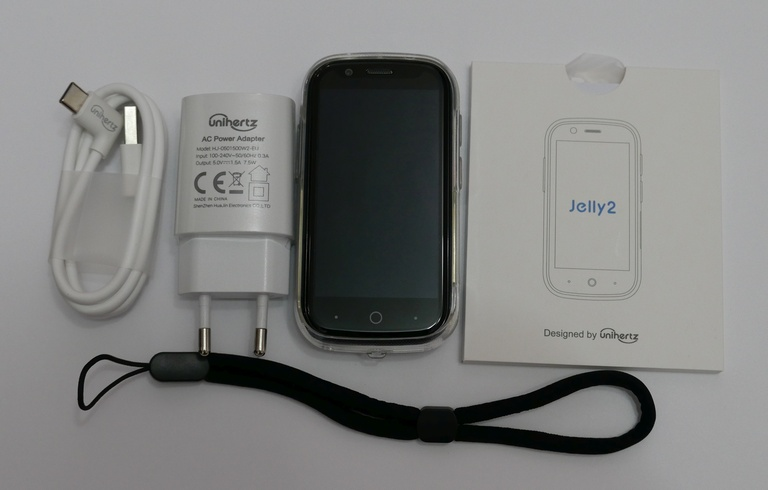
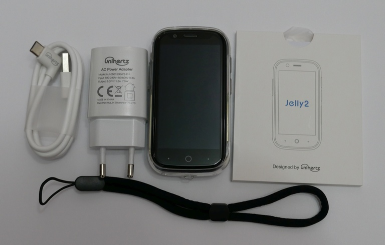
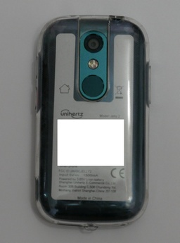
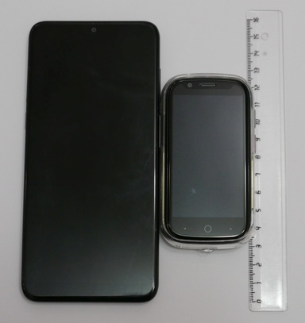
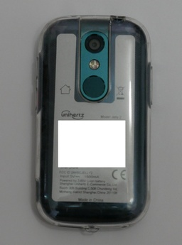
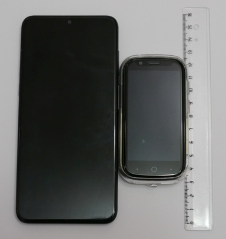
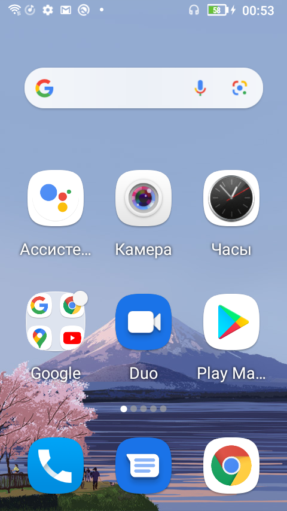
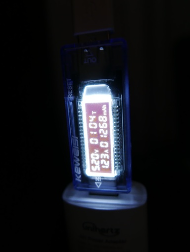
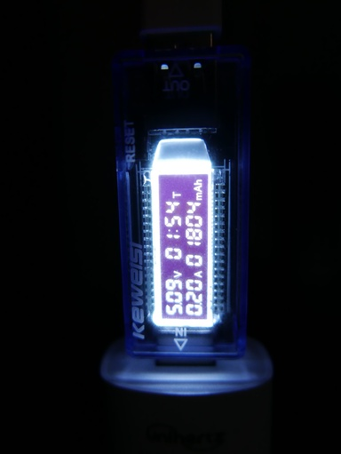

Unihertz Jelly 2 – третий смартфон в линейке Jelly, выпущен в 2020 году. Также компания выпускает защищённый смартфон Atom. Главные нововведения в новой модели — это увеличенное в два раза разрешение экрана, 6 ГБ оперативной памяти и актуальный процессор.
Сравним с другими компактными смартфонами. Каждую модель берём в топовой конфигурации. Добавим в сравнение также защищённые смартфоны Unihertz Atom и Servo S10 Pro.
Название | Unihertz Jelly 2 | Unihertz Jelly Pro | Unihertz Atom | Soyes XS | Servo S10 Pro ---------|------------------|--------------------|---------------|----------|-------------- RAM/ROM | 6/128 | 3/32 | 4/64 | 3/32 | 3/64 Размер | 95x49.4x16.5 мм | 92.4x43x13 мм | 96,6x45x18,8 мм | 91x47x9,8 мм | 97.8x51.4x15.5 мм Процессор | MediaTek Helio P60 | МТ6737 | MediaTek Helio P23 | MT6737 | MT6737 ОС | Android 10 | Android 8.1 | Android 9.0 Pie | Android 6 | Android 6 Аккумулятор | 2000 мАч | 950 мАч | 2000 мАч | 1580 мАч | 1800 мАч Экран | 3” 480x854 | 2.45” 240x432 | 2.45” 240x432 | 3” | 3” 480x854 Камера | 16MP AF/8MP FF | 8MP AF/2MP FF, видео 1080p | 16MP AF/8MP FF, видео 1080p | 5MP/5MP | 13 MP/5 MP USB | USB Type-C | Micro USB | USB Type-C | ? | ? Связь | 4G, Wifi5 2/5ГГц, Bluetooth 4.2, NFC | 4G, Wifi4 2/5ГГц, Bluetooth 4.0 | 4G, Wifi5 2/5ГГц, Bluetooth 4.1, NFC, рация | 4G, Wifi4, Bluetooth? | 4G, Wifi?, Bluetooth?, NFC, рация SIM, microSD | 2x nanoSim, microsdxc (до 256 ГБ) | 2x nanoSim, microsdxc (до 256 ГБ) | 2x nanoSim, microsdxc (до 256 ГБ) | 2x nanoSim, microsdxc (до 64 ГБ) | 2x nanoSim, microsd? Цена (на конец 08.2021) | 15 650,23 руб. | 8 779,40 руб. | 18 197,79 руб. | 8 015,21 руб. | 9 771,85 руб.
Как видим, данный смартфон обладает наиболее актуальными характеристиками среди своих соперников.
Перейдём к распаковке смартфона. Смартфон поставляется в небольшой квадратной коробке. В комплекте к смартфону ремешок, инструкция и зарядка на 1.5 А с кабелем. На смартфоне уже есть чехол и защитная плёнка, ещё одна защитная плёнка вместе с инструкцией спрятана в квадратный конверт.

 

 





Экран устройства достаточно яркий. Проблем с читаемостью не возникает, всё довольно крупно. Клавиатурой на удивление удобно пользоваться для такой диагонали. Всё-таки даже по сравнению со смартфонами десятилетней давности Jelly 2 слишком компактный.


На смартфоне имеется программируемая кнопка. Если зажать её на несколько секунд, включается вспышка. Двукратное нажатие делает снимок экрана.
Лоток сим-карты рассчитан на две nanosim или одну nanosim и microsd.
Из предустановленных приложений кроме стандартных для Android 10 есть TrackBack, SOS (для назначения действий на кнопку SOS), NFC Card List (хранилище NFC карт), Student mode и ZaZa remote (приложение для управления ИК-передатчиком). Также имеется приложение Инструменты.

При подключении к компьютеру доступны опции: Передача файлов, USB-модем, MIDI, PTP и без передачи данных. Версия USB при подключении комплектным кабелем — 2.0. Для использования 3.0 надо подключать через кабель USB Type-C-USB Type-C или USB Type-A версии 3.0.

Скорость копирования данных комплектным кабелем 37 МБ/c, соответствует скорости USB 2.0. При использования кабеля версии 3.0 скорость составляет всё те же 37 МБ/с, хотя Windows определяет устройство как USB 3.0. Изначально пользователю доступно 111 ГБ внутренней памяти.
Фотокамера здесь на уровне бюджетных телефонов, при 100% масштабе сильно заметна работа шумодава. Ночью снимки сильно размыты. В меню камеры имеется три режима: таймлапс, видео и фото. У задней камеры также имеется режим pro, в котором можно выбрать баланс белого, iso и экспозицию. Никаких дополнительных режимов вроде макро (естественно программного) или панорамы нет.
По ссылке представлены примеры фото.
Посмотрим, как справляется смартфон с популярными браузерными тестами. Тесты будем проводить в браузере Chrome.
Sunspider | 978,5 мс Jetstream2 | 30,624 Octane 2.0 | 10112
Это приблизительно в два раза быстрее чем intel atom z3735.
Перейдём к тестам PCMark.
Work 3.0 Общая | 7156 Web browsing | 5614 Video editing | 5561 Writing | 7501 Photo editing | 14263 Data manipulation | 5620
Storage 2.0 Общая | 6197 Внутр. последовательное чтение | 464,61 МБ/с Внутр. произвольное чтение | 31,94 МБ/с Внутр. последовательная запись | 142,29 МБ/с Внутр. произвольная запись | 7,63 МБ/с Чтение SQLite | 1748 IOPS Обновление SQLite | 236 IOPS Вставка SQLite | 153 IOPS Удаление SQLite | 229 IOPS
Теперь посмотрим на результаты тестов 3dmark.
| Общая | Graphics | Physics
-------------------|-------|----------|--------- Sling Shot | 1691 | 1554 | 2445 Sling Shot Extreme | 1298 | 1142 | 2493 Wild Life | 644 | | Wild Life Extreme | 174 | |
Во время тестов смартфон ощутимо нагревался с задней стороны.
Посмотрим как телефон справляется с проигрыванием видео. При просмотре youtube видео с разрешением до 1440p60 выводится плавно, с 2160p60 уже заметны притормаживания.

Видео h264 1080p24 также воспроизвелось без проблем как MX Player, так и стандартным плеером. При воспроизведении видео h264 2160p25 были заметные подёргивания. Аудиодорожки AC-3 стандартным плеером не воиспроизводятся. Видео VC1 (используется в некоторых blueray) воспроизводилось MX Player программно, были заметны небольшие подёргивания, стандартный плеер файл не открыл. Видео h264 high 10, так любимое анимешниками, воспроизвелось без нареканий, но только в MX Player и опять же программно.
При проигрывании музыки заметен едва различимый шум. Для аудиофилов можно порекомендовать разве что купить внешний ЦАП. К сожалению, мне не удалось вывести звук через имеющийся у меня переходник USB Type-C.
Перейдём к тестам автономной работы. Все тесты проходили при яркости экрана 50%.
Видео (MXPlayer, 1080p h264) | 7 ч 53 мин Яндекс.музыка | 28 ч 45 мин PCMark Work 3.0 Battery Life | 6 ч 2мин
Следует также заметить, что при низком заряде батареи загорается красный светодиод рядом с фронтальной камерой.
Смартфон заряжается от комплектной зарядки напряжением 5.2 В и силой тока 1.23 А. Полностью заряжается за час пятьдесят минут, напряжение опускается до 5 В.
 
Подведём итоги. У unihertz получился ультракомпактный смартфон, которым действительно удобно пользоваться. Из плюсов можно отметить более-менее актуальную платформу, которая лучше, чем у конкурирующих моделей, и продолжительное время автономной работы. Из минусов — слабую камеру и посредственный звук через наушники.
(c) Михаил Морозов 2021. Это произведение доступно по лицензии Creative Commons Attribution 4.0 International